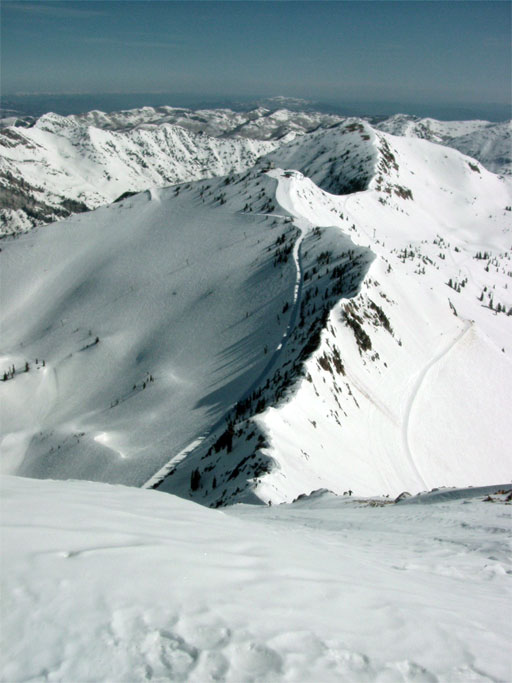

Back to drhanson.net

This view is from the top of the East Twin, looking down the ridge just climbed to the Road to Provo. The cat track on the right side of the ridge in this photo is the road to Powder Paradise in Mineral Basin.